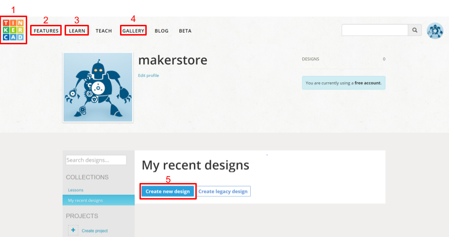
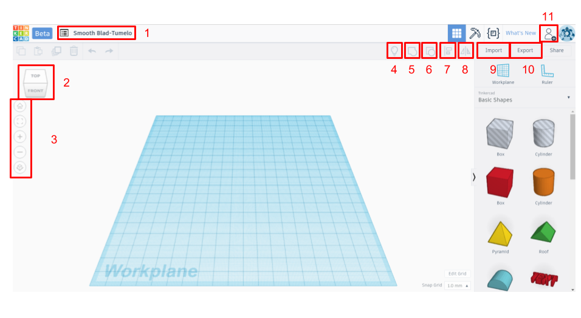
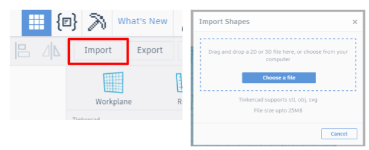
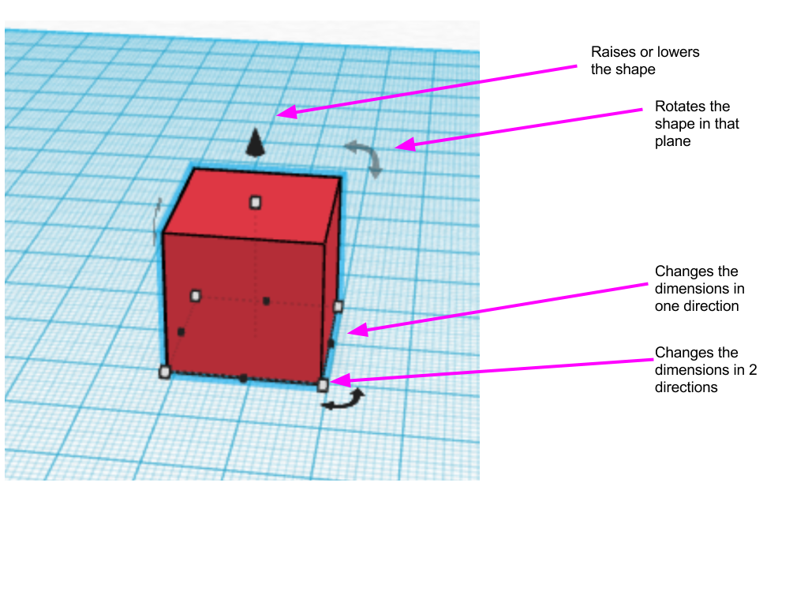
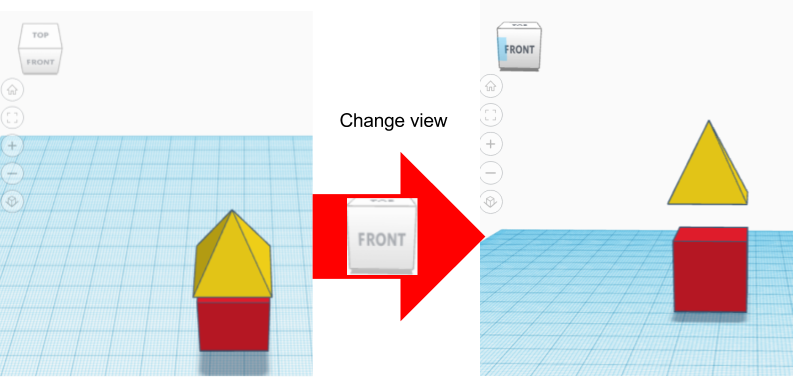
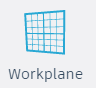
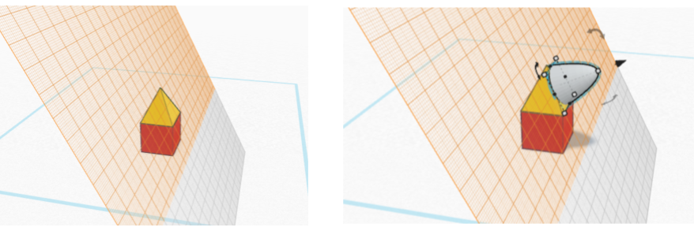
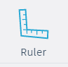
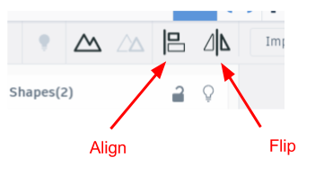
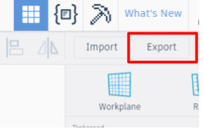

Tinkercad Guide
Tinkercad is an easy software that allows you to design 3D desgins. It is easy to learn and simple to use. We strongly suggest you use this if this is your first time designing in 3D. To begin with, go to tinkercad.com and create an account. When you create an account, tinkercad starts with tutorial. Do the first few exercises to help you get to know the program. This page will introduce the basics.
Tinkercad Layout
Tinkercad is an easy way to do create your own 3D design. It is perfect for beginners and can still be used to create more complex designs.
When you go to the website, you need to sign up or log in. If it is the first time you visit the site,
it will run you through the basics tutorial. You will learn to to move objects, use the camera controls, creating holes. If it is the first time you are using the software, I recommend running through the tutorial
Buttons on the dashboard

- Tinkercad logo: Clicking on the tinkercad logo with bring you back to the dashboard page
- FEATURES: This button takes you to a page that gives you an overview of Tinkercad’s features
- LEARN: The LEARN is where you can find tutorials to help you navigate the software a little easier. There are also lessons walking you through basic projects to inspire different ideas and to practice with the software.
- GALLERY: The GALLERY is where you can see projects that other people have made visible to the public, you can copy and modify those designs or inspire yourself from them. It is the fourth tab from the tinkercad logo.
- Create a new design: To create a new design in tinkercad, sign in and it will lead you to the desktop. Select the Create new design button and this will bring you to a blank workspace.
- Name of your design: To change the name of your design, click on the automatically generated name that is in the top left corner. This is useful to be able to find the design later and know what it is.
- View square: Drag around the square to change the viewing angle.
- View buttons: Bring the viewing angle back to home, change the zoom, switch to orthogonal view
- Show all: This will show any hidden shapes. While designing, you can choose to hide a shape. This is sometimes helpful if you want to see a piece that is under another.
- Group: Take several shapes and turn them into one shape
- Ungroup: Take a shape that is composed of several pieces, and separate them back into individual pieces.
- Align: Align several pieces
- Mirror: Mirror a component
- Import: You can also import shapes that have already been created using the Import button. You can add both 2D and 3D shapes. The file type for 2D shapes needs to be “.svg”, and the file type for 3D shapes is “.stl” or “.obj”
- Export: Download the selected object or everything on the build plate. Download it as an .stl for 3D printing and a .svg for laser cutting

- Collaborate: Generate a link so that you can share you can work on your project with someone at the same time.
- Black cube: Change one dimension
- White cube: Change two dimensions
- Curved black arrows: Rotate shape in that plane
- Black cone: Raise or lower shape
Create a new design
When you click “Create a new design", you are brought to a new window with a blue, gridded, workplane. Think of the workplane as a floor or the base of the 3D printer. You want to make sure that the part you are building is sitting on the this surface. This is where you will do your designing. There are several tools which you can use to help you design.

Using tinkercad
On the right hand side there are a series of different shapes that you can place on the your workplane. These are your building blocks. If you click on building Basic Shapes you can select different types of shapes (or blocks).

There are shapes that are Holes, these on the striped gray and white ones. If you move them to the workplane, they will appear translucent. As you will learn, this is not very useful because any shape can be turned into a hole. For example, if you found model you liked on Tinkercad and you wanted to add a new hole.
Once you have your shape you can change the size with:

If you are putting a piece on top of another, make sure the piece is not floating. Every piece should be touching another one or be on the platform.
When you have a shape selected, the Shape window will appear. This tool lets you choose if this shape is solid (Color) or a hole (Hole).

If you like your shape to be a hole, select the hole button and the shape should become semi-transparent. It will not actually take into affect until you group those two objects. The group button, found on the top right hand side, will only
be available when there is more than one shape selected.
You also want to group all your shapes before downloading for 3D printing.
To change the name of your design, click on the automatically generated name that is in the top left corner. This is useful to be able to find the design later and know what it is.

Other tools
Other useful tools can be found above the Tinkercad shapes menus.

Workplane tool allows you to change the base plane. Drag it onto the edge of another shape, to create a new workplane. An orange workplane will appear. If you drag a shape onto the plane, it will already appear perpendicular to that plane. To get rid of the new orange plane, drag a new plane back to the original blue one.

Ruler allows for you to easily change the dimensions of the shape. Just place it anywhere on the workplane and the dimensions will appear. Just click on the dimensions and you can change their value.

Next to the group button, there are another set of useful tools, Align (L) and Flip (M). To use these, you need to select more than one shape.
Printing your design
When you are done, and you want to print your new design, click Export at the top right corner.

A new window will appear. If you want to 3D print, choose which shapes you want to print (everything or only some selected shapes) and select the format .STL. If you want to laser cut the projection of the shape, select the format .SVG.